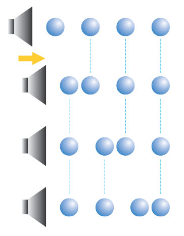
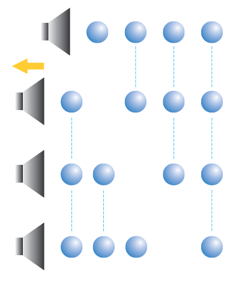
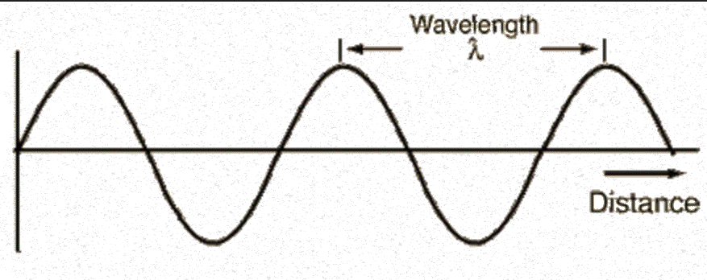
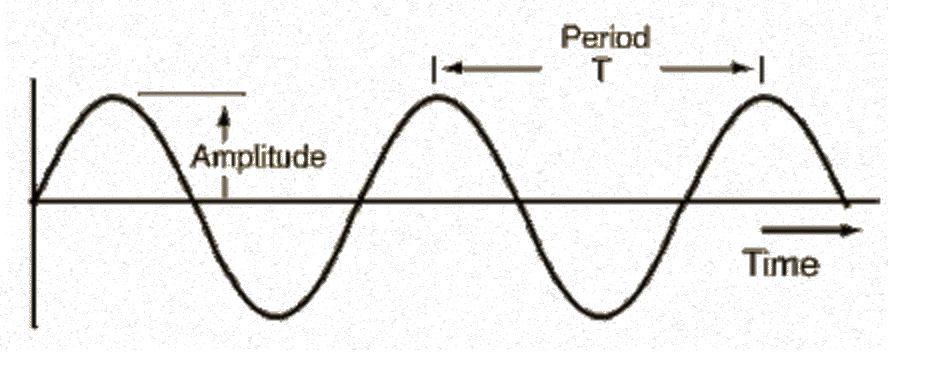
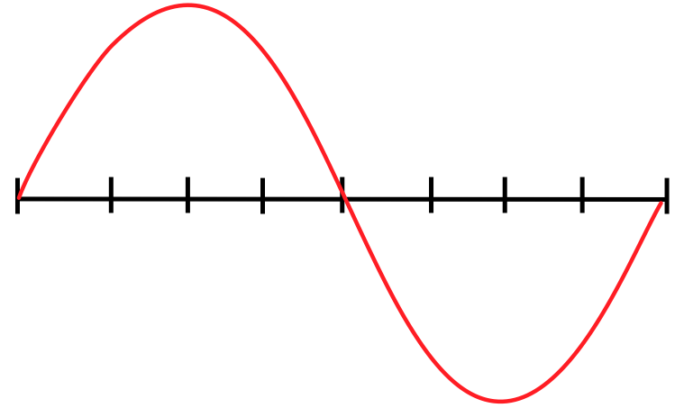
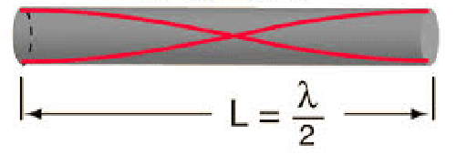

Sound is caused by a disturbance in the surrounding medium—air. Air is an elastic medium, meaning it returns to its original shape once forces stop acting on it. Consider a single audio speaker. When music is playing the speaker vibrates, pushing and pulling air molecules surrounding it.
When the speaker moves outward, it pushes out surrounding air molecules and that push causes a chain reaction of disturbances that propagate through the air. When the speaker moves inward, it creates more space for air particles to move, starting with the air molecules closest to the speaker. This is known as positive and negative displacement.

Figure 2 shows a speaker at the left vibrating at some frequency. You can see compression waves traveling to the right. Notice though that any one particle (some have been highlighted in red) doesn't actually move to the right but just oscillates back and forth.
The speed of sound results from the inertia and elastic properties of the material it travels through. The greater the mass of individual particles of the medium, the less responsive they will be to the interactions between neighboring particles and the slower the wave. A sound wave will travel faster in a less dense material than a more dense material. For instance, a sound wave will travel nearly three times faster in Helium as it will in air. A sound wave will travel faster in a medium with more restoring force. Sound (technically acoustic) waves travel extremely fast in metals which have stiff crystal structures to restore individual particles.
Sound waves propagate at velocity . The speed of propagation is determined by the medium through which the wave propagates.
The speed of sound in air can be expressed by the following equation:
where T is the temperature of the air in degrees Celsius.
Question 1
What are the units of the 0.6 constant in Equation 2?
Question 2
If it is C in your room what is the speed of sound?
The speed of waves is a slightly tricky concept. It does not refer to how fast any one given particle is moving. Rather, it refers to how fast the wave propagates through the medium. If you were to pick a point on the wave, say one of the positive displacements, and watch it move...this would be the speed of sound. It is the measure of how fast the disturbance moves through a medium.
The speed of the wave is determined by the frequency, , and the wavelength, . The equation is:
Question 3
If you hear a 440 Hz A note played on a guitar in your room right now, what would the wavelength be?
Question 4
If the frequency of the sound increases, what happens to the wavelength? Justify your answer.
The word resonance comes from latin words for ‘echo’ and ‘resound’. Resonance is illustrated by swing on a playground; if you push a friend on the swing and wait for it to return to you, the swing will fall into a rhythm, a natural interval. As long as you push the swing in time with its natural frequency, the swing can go higher. The natural frequency is the frequency at which it would oscillate if there were no resistive forces present. However, if you attempt to push the swing outside of this natural frequency, the swing will go lower (and you might hurt yourself).
The lowest resonant frequency is called the fundamental frequency, or the 1st harmonic. A harmonic is a positive integer multiple of the fundamental frequency. Open cylindrical air columns can produce all harmonics of the fundamental frequency. Cylinders with one closed end can only produce odd harmonic frequencies.
Exercise 1

This is because of the boundary conditions for a standing wave require that there is a node at any closed end and an anti-node at any open end. In Figure 3, the top tube is open on both sides and the bottom tube is open at one end and closed at the other. Drawn in each is the first standing wave that can form in either tube.
Question 5
What is the wavelength for the fundamental frequency of an open-open tube in terms of the tube length .
Question 6
a) For an open-open tube, draw the next two standing waves (harmonics) that would form.
b) What is the wavelength for each of those two harmonics in terms of the tube length .
c) Based on the fundamental, and the next two harmonics, what is the wavelength for the th harmonic?
For this lab you will build a tube that you can change the length of out of card board. You will then use PhyPhox to generate a constant frequency tone and place your phones speaker at the end of the tube. You will then adjust the length of the tube until a standing wave forms in the tube and it resonants.
Exercise 2
You will be able to change the tube's length from to . Over that length you will want to measure five harmonics (have your tube resonate five times).
Thus you need to choose a frequency that will allow this.
Exercise 3
In this exercise you will build your resonant cavity that you will use in next weeks lab. Basically, we want to construct one tube that fits perfectly inside of another one. That way we can slide the inner tube out of the outer tube to make a longer tube.

If you don't have paper towel rolls, you can tape multiple toilet paper rolls together or use a different type of cardboard tube. You can use one from aluminum role or saran wrap. You just need two that are the same diameter, or one that fits perfectly inside the other already. If you already have a tube that fits perfectly inside of another one, you are done with the apparatus.
 Cut the tube down its length.
Cut the tube down its length.
 This is what it should look like after being cut.
This is what it should look like after being cut.

 Make sure to leave a little piece sticking out.
Make sure to leave a little piece sticking out.
 Don't wrap the tape too tightly.
Don't wrap the tape too tightly.
 This is what it should look like after Step 6.
This is what it should look like after Step 6.
 This is the completed inner tube.
This is the completed inner tube.
 Finished tube.
Finished tube.
We will investigate resonance in an air column as we look to calculate the speed of sound.
Sound is caused by a disturbance in the surrounding medium—air. Air is an elastic medium, meaning it returns to its original shape once an acting force no longer acts. To illustrate ‘this’, consider a single audio speaker. When music is playing the speaker vibrates, pushing and pulling air molecules surrounding it.
When the speaker moves outward, it pushes out surrounding air molecules and that push causes a chain reaction of disturbances that propagate through the air. <<figure 1>> When the speaker moves inward, it creates more space for air particles to move, starting with the air molecules closest to the speaker. <<figure 2>> This is known as positive and negative displacement.


Remember, the air particles themselves don’t move, they only vibrate. Check out figure X to see how the individual particles only displace and return to their equilibrium.
This vibration produces acoustic waves. Acoustic waves are the propagation of energy through the pressure field by means of compression and decompression. When an acoustic wave is between 20 Hz and 20 kHz (more on this later), we call it sound. Sound can be looked at as small displacements of the medium or as pressure disturbances. To be overly simplistic, there are two elements at the point of reception (your ears) that form all sound waves—pressure and time.
There are two main types of waves—transverse and longitudinal.
Transverse waves oscillate in a motion perpendicular to the direction of propagation of the wave. Consider a string where you move your hand up and down (or left and right); a wave is created that travels the length of the string.
In contrast to transverse waves are longitudinal waves. Longitudinal waves oscillate in the same direction as the propagation of the wave. Sound waves fall into the latter category.
Sound waves make air molecules travel toward and away from the source in pockets of high and low pressure; they don’t bounce up and down. However, sound waves are often easier to visualize as a wavy line with peaks and troughs representing high and low pressure areas. <<<<3L lab manual talks about compression, high pressure, low pressure. Needed? 4th paragraph from bottom of page 30. It would go here if so.>>>
If we drive a sine wave through our speaker then the propagating wave will be sinusoidal in shape. A sine wave is the simplest periodic vibration. Looking at a sine wave, we can label the various parts. From equilibrium, a peak is in the positive direction and is called a crest. In the negative direction, a trough is the bottom of a wave. Wavelength refers to the distance between crests or troughs.
Remove one of the diagrams.
The upper part of the sine wave is the speaker moving forward producing the compression of air particles. The crest is the top of the wave. The lower part of the sine wave is the speaker moving rearward producing the stretching (rarefaction) of the air. The trough is the bottom of the wave. In the audio industry, a compression (push) wave is defined as positive.
Multiple waves in the same system will superimpose to form one unified wave. This is called the superposition principle. The brain perceives two notes, a low and a high note. In reality, it is one complex wave containing both slow and fast vibrations that reaches your ear when both notes are played together.
RT
In the pendulum lab, we looked at periodicity. The period was said to be the time it takes for one cycle in a repeating event or the time for which the event repeats itself. Frequency is the number of occurrences of a repeating event per unit of time. Frequency is measured in units of hertz, Hz. One hertz means there was one occurrence of a repeating event per second.
Frequency is inversely proportional to period. In the pendulum lab, for example, I averaged data and found the period of my pendulum to be 1.78 s. This means that the frequency of my pendulum was 0.56 Hz (make better numbers).
The speed of sound is dependent on the medium through which it propagates and is a fundamental property of that medium. ...density of the medium through which it propagates as well as the “springiness” of the particle interactions.
All things being equal, sound will travel slower in denser materials and faster in “springier” ones.
Now we can look at the frequency of the vibration of our speaker, in which the frequency of a wave is the number of complete back-and-forth vibrations of a particular per unit time. If a particle of air undergoes 1600 longitudinal vibrations in 2 seconds then the frequency of the wave would be 800 vibrations per second. The unit used for frequency is the Hertz (Hz), where
1 Hertz = 1 vibration / second
Each particle vibrates due to the motion of its nearest neighbor. For example, if the first particle in the medium begins vibrating at 500 Hz, it will push and pull on the next adjacent particle at the same frequency of 500 Hz. The process continues throughout the medium; each particle vibrates at the same frequency.
Waves have certain 'interactions' at boundaries, making boundary conditions interesting and enlightening.
There exists two types of boundaries—fixed and free. A fixed boundary would be exemplified as a string attached to a wall. With sound waves, a fixed boundary is a position in which the sound wave interacts with something outside the medium. A free end is one in which the interacting end is not fixed but allows movement. <<>>
When a sound wave reflects off a boundary it travels back in the direction it came, though inverted. It should be noted that the inversion is caused by the hardness of the material. Some materials do not cause the wave to invert upon reflection.
When an acoustic wave propagates outward, reflects, and travels back towards the source, there are two possibilities that can occur. At some distance d from the source, a crest and a trough meet. They essentially 'cancel' each other out. These waves are 90 out of phase. This is known as destructive interference.
At some distance d from the source, a crest and a crest meet. They build each other up, constructively. This is known as constructive interference. <<More on phase?>> At some distance d from the source, a trough and a trough meet. They build (though inversely) each other down. This is also constructive interference. Note: after the waves interact with one another, they will continue to propagate as they were.
The speed of sound results from the inertia and elastic properties of the material it travels through. The greater the mass of individual particles of the medium, the less responsive they will be to the interactions between neighboring particles and the slower the wave. A sound wave will travel faster in a less dense material than a more dense material. For instance, a sound wave will travel nearly three times faster in Helium as it will in air. A sound wave will travel faster in a medium with more restoring force. Sound (technically acoustic) waves travel extremely fast in metals which have stiff crystal structures to restore individual particles.
Sound waves propagate at velocity v. The speed of propagation is determined by the medium through which the wave propagates.
The speed of sound in air can be expressed by the following equation:
v = 331 m/s + (0.6 m/s/C) * T
where T is the temperature of the air in degrees Celsuis.
Think about the case of a simple transverse wave; it takes the form of a sine wave as a function of distance. The wave has properties like amplitude, wavelength and distance.

Looking at a sine wave as a function of time, period takes the place of wavelength when discussing peak to peak of a wave.

The velocity of the wave goes in the same direction as distance and time, in the above snapshots. From basic physics, we know that
Wavelength is our distance. Since we are looking at one wavelength, that means we are looking at one period. Now our relationship becomes
Since frequency has an inverse relationship with period, we finally arrive at the wave relationship
The word resonance comes from latin words for ‘echo’ and ‘resound’. Resonance is illustrated by swing on a playground; if you push a friend on the swing and wait for it to return to you, the swing will fall into a rhythm, a natural interval. As long as you push the swing in time with its natural frequency, the swing can go higher. The natural frequency is the frequency at which it would oscillate if there were no resistive forces present. However, if you attempt to push the swing outside of this natural frequency, the swing will go lower (and you might hurt yourself).
The lowest resonant frequency is called the fundamental frequency, or the 1st harmonic. A harmonic is a positive integer multiple of the fundamental frequency. Open cylindrical air columns can produce all harmonics of the fundamental frequency. Cylinders with one closed end can only produce odd harmonic frequencies.
Amplitude is proportional to the driving force.
Though we are not considering factors of a system, such as damping, we can investigate how resonance works. Looking at the real part of the particular solution to the differential equation for the equation of motion of the driving force, we find that
which shows that the amplitude is proportional to the driving force. It also shows that left to its own devices, an oscillator vibrates at its natural frequency 0(or a slightly lower frequency 1 if we allow for the damping, ). If we try and force it to vibrate at a frequency , then for values of close to 0, the oscillator responds very well, but if is far from 0, it hardly responds at all.
Looking again at our simple wavelength, we see that a full wavelength is from crest to crest or trough to trough. A wavelength could also be taken from one equilibrium point to the next, as the next figure.

Looking at the fundamental frequency of length L we see that only half the wavelength makes up the fundamental frequency!

If we now look at the fundamental frequency in a cylinder with open ends we see that each end of the tube has an anti-node with a node in the middle.
